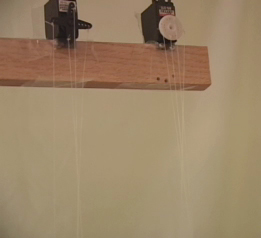
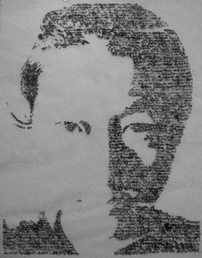
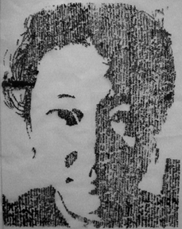
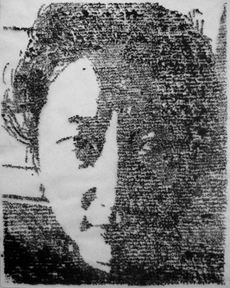
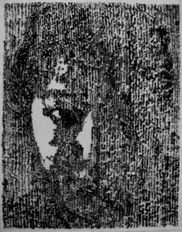

2009 April, IPhone Application
Research Question
How to use it
Left: Motor, Right: Movement

Each Panel Picture(Korean: horizontal direction writing, English: Vertical Direction Writing)
   
Documentation
My stay in America gave me a chance to introspect myself as per objectives of immigration, my existence, and my home country. This thought as influential in creating Blurred. My reminiscence of Korea, my status in America is main thematic driving forces in Blurred.
There are two languages in Blurred: my mother tongue, Korean and my second language, English. Those two languages are silk-screened in 4 glasses and layered. The glasses are hanging two motors in the top which let glass move smoothly. Korean is written horizontally and English is written vertically and there says I miss Korea, I am Korean and I am proud to be a Korean etc. They are difficult to read overlapped like two memory in Korea and America are mixed in me. Human's memory overlap with layers and weathers away over time. Meanwhile, they are moving together actively. By using the image of a two language, I create a new space, one that is stretched between two nations. They are weaving and moving together in Blurred.
Exhibition
2009 April Aware Home Open House